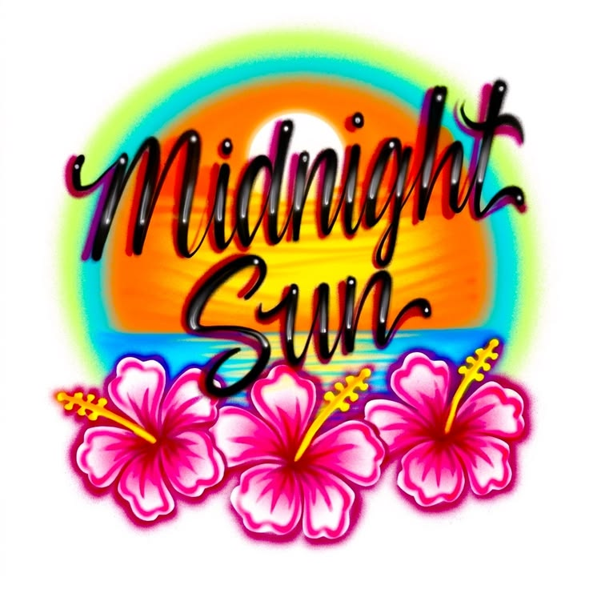

No nightmares when you can still see the light Can't find me, I'm not in the city tonight I like your playlist, boy, turn it up a little louder Road's empty, so you drive a little faster Ain't taken nothing tonight, but I'm feeling so high Show my tan lines, low-rise, rooftop down It's golden hour all the time It's the midnight sun-kissed skin under the red sky Layin' on your chest like this Hold me like the pebbles in your hand, initials in the sand, yeah Summer isn't over yet Skinny-dipping with your heart out, it's my favorite part now We ain't gotta tell no one A never-ending midnight sun A never-ending midnight sun Connected, I'm so in touch with it all (Yeah, yeah) Feel protected by the moon and the stars I'm walking barefoot, feel the grass in between my toes Bombshell, wind in my hair, baby, let it blow, yeah It's been a while since I cried over something so nice (So nice) Show my tan lines, low-rise, rooftop down It's golden hour all the time (All the time) It's the midnight sun-kissed skin under the red sky Layin' on your chest like this (Ah) Hold me like the pebbles in your hand, initials in the sand, yeah Summer isn't over yet Skinny-dipping with your heart out, it's my favorite part now We ain't gotta tell no one (Shh) A never-ending midnight sun A never-ending midnight sun (A never-ending midnight sun) A never-ending midnight sun